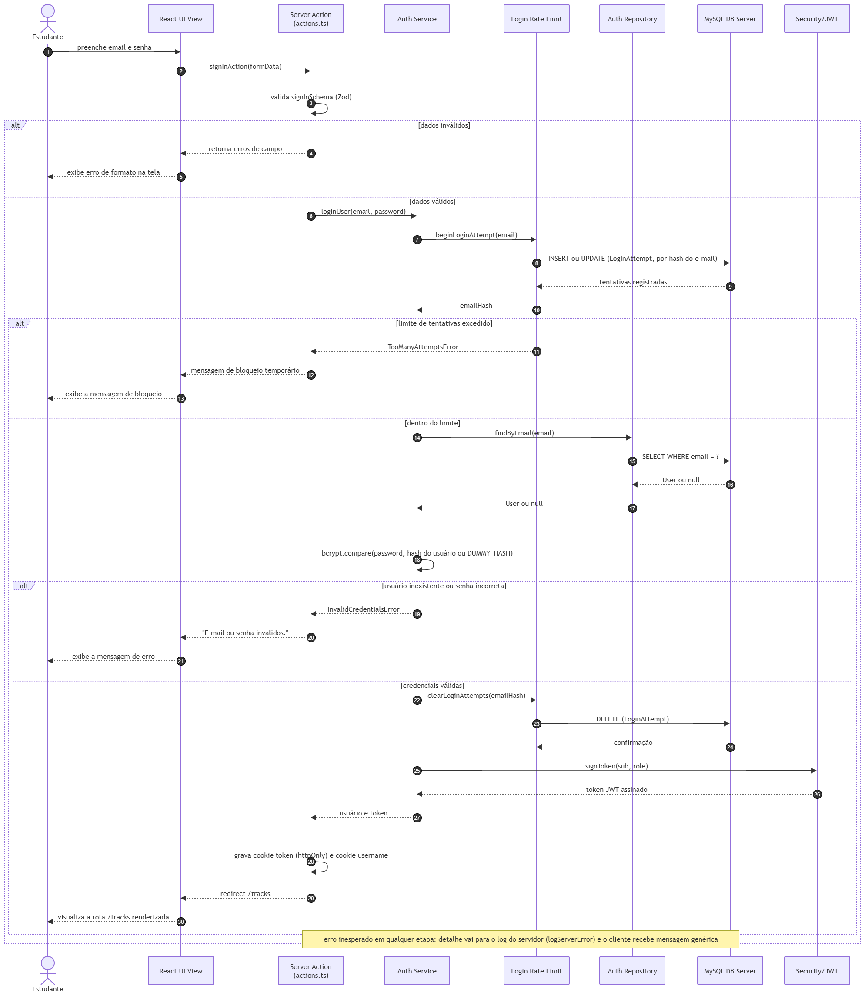
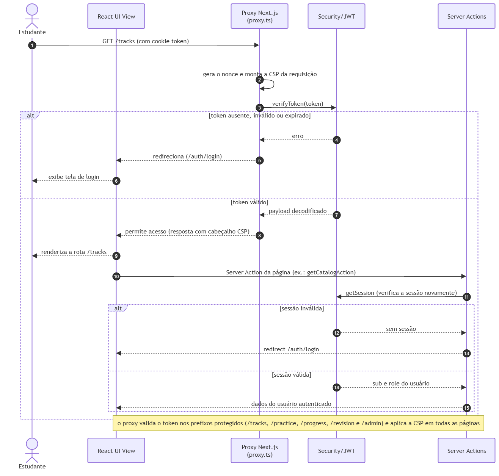
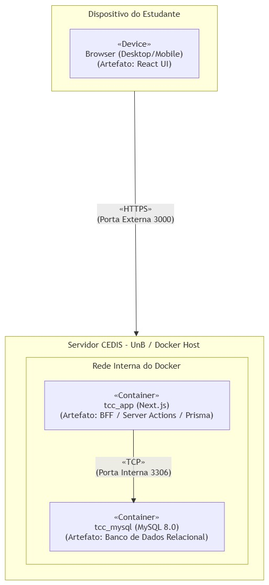

Documento de Arquitetura de Software¶
Plataforma de Apoio ao Aprendizado de Segurança de Software
Projeto: AEGIS – AI, Ética e Gestão de Integridade em Software
Versão: 1.4
Data: 3 de Novembro de 2026
Autores: João Pedro Rodrigues Morbeck e Pedro Henrique da Silva Melo
Universidade de Brasília (UnB) - Faculdade de Ciências e Tecnologias em Engenharia (FCTE) - Curso de Engenharia de Software
1. Introdução¶
1.1 Propósito¶
Este Documento de Arquitetura de Software (DAS) fornece uma visão técnica abrangente e estruturada para a plataforma de suporte ao aprendizado de desenvolvimento seguro e auditoria de Inteligência Artificial (IA) no contexto do Trabalho de Conclusão de Curso (TCC) em Engenharia de Software da Faculdade de Ciências e Tecnologias em Engenharia (FCTE/UnB). Ele serve como especificação de referência para os desenvolvedores e professores avaliadores, detalhando as decisões de design, padrões arquiteturais e a rastreabilidade direta dos requisitos funcionais (RFs) e não funcionais (RNFs) levantados no TCC 1.
1.2 Escopo¶
O escopo arquitetural deste documento cobre o ecossistema unificado da aplicação, construído sobre a tecnologia Next.js (React.js) no frontend e no backend (Backend-for-Frontend - BFF), conectando-se à nuvem do Prisma ORM (MySQL) para a persistência e segurança dos dados. O software implementará uma abordagem orientada a microlearning e trilhas adaptativas de aprendizado. Ele não visa atuar na fase de implementação de código industrial via análise estática ou dinâmica automatizada em servidores de produção, mas foca na fundamentação e fonte de apoio de estudantes de engenharia de software para que possam conhecer e iniciar um estudo em desenvolvimento de software seguro antes do ingresso na indústria de tecnologia.
1.3 Definições, Acrônimos e Abreviações¶
A tabela abaixo consolida os principais conceitos, termos técnicos e acrônimos utilizados no decorrer deste artefato arquitetural:
| Acrônimo / Termo | Definição Técnica |
|---|---|
| Next.js | Framework React voltado para produção que possibilita renderização híbrida no servidor (SSR) e geração estática estendida, unificando rotas e controle sob Server Actions. |
| BFF (Backend-for-Frontend) | Padrão de arquitetura onde uma camada de servidor é dedicada de forma exclusiva para servir e intermediar as necessidades de dados e rotas específicas da interface do cliente. |
| Prisma ORM & MySQL | Prisma é um Object-Relational Mapper (ORM) de código aberto para Node.js e TypeScript que simplifica a modelagem e o acesso a bancos de dados. MySQL é um sistema gerenciador de banco de dados relacional (SGBD) confiável e amplamente utilizado na indústria, operando em conformidade com as propriedades ACID para garantir transações seguras e consistentes. |
| Microlearning | Abordagem instrucional que fragmenta conteúdos extensos em pílulas de conhecimento, acompanhadas de exercícios imediatos de fixação rápida para aumentar a retenção cognitiva. |
| JWT (JSON Web Token) | Token criptográfico estruturado em JSON usado para transmitir dados de sessão de forma segura e stateless entre o cliente e o servidor de BFF. |
| SoC (Separation of Concerns) | Princípio de design de software focado em separar o código do programa em seções independentes, de modo que cada parte resolva uma única responsabilidade. |
| SAD / DAS | Software Architecture Document (SAD) ou Documento de Arquitetura de Software (DAS) - o artefato formal de representação e desenho técnico do sistema. |
| Folder-by-Feature | Método de organização de diretórios onde os arquivos são agrupados por domínio de negócio/funcionalidade, e não pelo tipo de arquivo técnico. |
Proxy (proxy.ts) |
Arquivo do Next.js que intercepta as requisições antes da renderização (função antes conhecida como middleware), usado para validar a sessão nas rotas protegidas e aplicar a Content Security Policy. |
| CSP (Content Security Policy) | Cabeçalho HTTP que restringe as origens de onde scripts, estilos e outros recursos podem ser carregados, reduzindo o impacto de ataques de injeção de código (XSS). |
| Nonce | Valor aleatório gerado a cada requisição e incluído na CSP e nas tags <script> legítimas, de modo que apenas os scripts emitidos pelo servidor sejam executados. |
| Rate Limiting | Controle que limita a quantidade de tentativas de uma operação em uma janela de tempo. Na plataforma, é aplicado ao login para dificultar ataques de força bruta. |
| LGPD | Lei Geral de Proteção de Dados Pessoais (Lei nº 13.709/2018), que fundamenta a política de privacidade e os direitos dos titulares na plataforma. |
1.4 Referências¶
As decisões e modelagens apresentadas neste artefato arquitetural estão cientificamente fundamentadas nas seguintes obras e documentos de engenharia:
- Kruchtem, Philippe (1995). Architectural Blueprints — The "4+1" View Model of Software Architecture. IEEE Software, v. 12, n. 6, p. 42-50. Disponível em: researchgate.net.
- Dowd, M.; McDonald, J.; Schuh, J. (2006). The Art of Software Security Assessment: Identifying and Preventing Software Vulnerabilities. Addison-Wesley Professional.
- Sommerville, Ian (2019). Engenharia de Software. 10ª Edição. Pearson Education.
- Leffingwell, D.; Widrig, D. (2003). Managing Software Requirements: A Use Case Approach. 2ª Edição. Addison-Wesley Professional.
- OWASP Foundation (2025). OWASP Top 10. Disponível em: top10.owasp.org/2025.
- Brasil (2018). Lei nº 13.709, de 14 de agosto de 2018 (Lei Geral de Proteção de Dados Pessoais - LGPD).
1.5 Visão Geral¶
Este documento está organizado seguindo a estrutura padrão RUP (Rational Unified Process) para DAS. A seção 2 introduz a representação arquitetural global (BFF de n-camadas). A seção 3 mapeia os objetivos e restrições técnicas amparados pelos requisitos não funcionais. A seção 4 apresenta a visão lógica baseada na decomposição de módulos (features), na hierarquia física de pastas do Next.js e nos componentes transversais de segurança. A seção 5 ilustra o fluxo dinâmico dos processos chaves. A seção 6 mapeia a implantação física (CEDIS e Prisma ORM), seguido pela visão de implementação na seção 7, representação de dados na seção 8, e considerações sobre tamanho, desempenho e qualidade nas seções 9 e 10.
2. Representação Arquitetural¶
Para assegurar um desenho de software robusto, flexível e academicamente defensável, adota-se o Modelo de Visões 4+1 de Kruchten (1995). Este modelo decompõe a arquitetura do software sob as óticas de casos de uso (o coração que unifica o design), lógica (decomposição estrutural), processos (dinâmica e sincronização), física/implantação (hardware e infraestrutura) e implementação (organização física do código fonte). Apesar do modelo cobrir a ótica de casos de uso, este projeto não adota tal visão.
O estilo arquitetural escolhido baseia-se em uma Arquitetura Cliente-Servidor de N-Camadas com o uso integrado do padrão Backend-for-Frontend (BFF) embutido e centralizado sob o Next.js App Router. O lado cliente, operando em browsers de desktop ou smartphones, renderiza páginas responsivas por meio de componentes React reativos. O BFF intermediará de forma exclusiva todas as requisições de backend via Server Actions e API Routes, aplicando o proxy do Next.js (proxy.ts) para a proteção de rotas e da Content Security Policy antes de bater nas tabelas estruturadas no banco relacional MySQL por meio do Prisma ORM.
3. Objetivos e Restrições Arquiteturais¶
A arquitetura deste software é restrita e moldada diretamente para atender aos cinco Requisitos Não Funcionais (RNFs) elicitados no TCC 1, as quais atuam como as metas de qualidade do sistema de microlearning:
- Segurança (RNF01) como Meta de Confidencialidade: A arquitetura blinda o sistema contra acessos indevidos por meio de camadas complementares:
- Controle de acesso em duas camadas: as rotas protegidas são interceptadas pelo proxy do Next.js (
proxy.ts), que valida a assinatura criptográfica dos tokens JWT, e cada Server Action de dados autenticados verifica novamente a sessão (defesa em profundidade), redirecionando para/auth/loginquando ela é inválida. - Isolamento de registros: garantido de forma lógica na camada de aplicação através das camadas de Services e Repositories do Prisma ORM, onde todas as consultas e escritas de dados filtram rigorosamente pelo identificador do usuário autenticado (userId) extraído da sessão segura, prevenindo vazamentos de progresso ou acesso a conteúdos de terceiros.
- Proteção do login: limite de tentativas por e-mail (rate limiting), com registro na tabela
LoginAttempt, e comparação de senha em tempo equivalente para usuários existentes e inexistentes, evitando enumeração de contas (seção 4.4.4). - Proteção contra injeção de código: cabeçalhos de segurança HTTP e Content Security Policy com nonce por requisição, sem
'unsafe-inline'emscript-src, que evita que scripts maliciosos sejam injetados (seção 4.4.3). - Rejeição sem exposição de detalhes internos: o cliente nunca recebe mensagens de erro técnicas. Apenas classes de erro conhecidas expõem mensagem, e o detalhe técnico fica restrito ao log do servidor, com segredos mascarados (seções 4.4.1 e 4.4.2).
- Privacidade: a plataforma mantém uma Política de Privacidade pública (
/privacy) alinhada à LGPD, com canal de contato para os direitos dos titulares. - Usabilidade e Responsividade Multiplataforma (RNF02): Para solucionar a dualidade observada no questionário aplicado no TCC1 (demanda por mobilidade no microlearning vs. necessidade de IDE para exercícios práticos complexos), o frontend foi projetado como uma aplicação Web responsiva integrada. Utiliza-se React.js e Tailwind CSS para fornecer uma transição de interface fluida e adaptável a telas de smartphones, tablets e desktops. Os formulários de cadastro e de alteração de senha exibem um indicador de força de senha com requisitos acessíveis a leitores de tela.
- Desempenho e Tempo de Resposta (RNF03): Para manter o engajamento e a fluidez instrucional, o sistema possui o limite estrito de processar o feedback dos exercícios de cada trilha com tempo de resposta máximo de até 3 segundos. Isso é assegurado usando Server Actions assíncronas no Next.js e conexões estruturadas em pool otimizadas com o banco MySQL via Prisma ORM.
- Suportabilidade e Modularidade (RNF04): A arquitetura de software é projetada de forma extensível por meio do agrupamento por domínios. Isso possibilita que novas trilhas técnicas ou recursos lúdicos (features adicionais) sejam acoplados sem impacto ou refatoração do código existente.
- Implementação e Inicialização (RNF05): O ecossistema em nuvem é configurado para inicializar automaticamente a única conta administrativa preexistente e criar o catálogo técnico básico de trilhas a partir de rotas protegidas durante o bootstrap e inicialização da base de dados do MySQL via Prisma ORM.
4. Visão Lógica¶
Para concretizar o requisito não funcional de modularidade e suportabilidade (RNF04), a decomposição lógica do sistema abandona o padrão técnico monolítico e adota a arquitetura Folder-by-Feature (Pasta por Funcionalidade). Os diretórios da aplicação Next.js estruturam-se sob módulos de domínio de negócio autossuficientes, contendo seus próprios componentes, types e chamadas de API, facilitando a coesão interna e reduzindo o acoplamento global.
4.1 Organização das Rotas¶
A estrutura de rotas da aplicação segue o padrão de Route Groups do Next.js App Router, agrupando as páginas pelo critério de proteção de acesso.
Rotas públicas, acessíveis sem autenticação, são isoladas no grupo (public) e compreendem as páginas de login e cadastro da plataforma. A Política de Privacidade (/privacy) também é pública, e a página inicial (/) apresenta a plataforma.
Rotas protegidas, que exigem sessão JWT válida, são isoladas no grupo (protected) e compreendem as funcionalidades do estudante: catálogo e mapa de trilhas, nós de leitura e exercício e o perfil de usuário.
Essa separação permite que a validação de sessão seja aplicada de forma centralizada sobre o grupo protegido, sem impactar as rotas de acesso público. O proxy valida o token nos prefixos protegidos (/tracks, /practice, /progress, /revision e /admin) e, adicionalmente, as Server Actions das features content e tracks-engine exigem sessão por meio do token JWT, e redirecionam para /auth/login quando há ausência disso.
src/app/
├── (public)/
│ └── auth/
│ ├── login/
│ └── register/
├── (protected)/
│ ├── tracks/ # catálogo de trilhas
│ │ └── [trackId]/ # mapa da trilha e seus nós
│ └── profile/ # perfil, progresso e exclusão de conta
├── privacy/ # Política de Privacidade (pública)
├── error.tsx # tela de erro com mensagem genérica e código de referência
├── layout.tsx
└── page.tsx # página inicial
4.2 Organização das Features¶
A camada modular da aplicação adota o padrão Folder-by-Feature, no qual cada domínio de negócio é encapsulado em um módulo auto suficiente dentro de src/features/. Cada feature contém internamente uma divisão rígida em camadas, garantindo a Separação de Responsabilidades (SoC) e o isolamento lógico entre apresentação, controle, domínio e infraestrutura. O padrão interno de cada feature segue a seguinte estrutura:
features/[nome-da-feature]/
├── components/ → Apresentação (UI React)
├── hooks/ → Controle de Estados (client-side), quando necessário
├── services/ → Domínio e Regras de Negócio (server-side)
├── types/ → DTOs e Schemas de Validação (Zod)
├── repositories/ → Infraestrutura de Dados (Prisma ORM)
├── errors.ts → Erros de domínio da feature e mapeamento seguro para o cliente
└── actions.ts → BFF Controller (Next.js Server Actions)
As features implementadas são:
| Feature | Responsabilidade |
|---|---|
| auth | Cadastro, login, logout, perfil, alteração de dados e exclusão de conta (com anonimização). Contém o serviço de limite de tentativas de login (login-rate-limit). |
| tracks-engine | Catálogo de trilhas, mapa interativo da trilha (nós concluídos, nó atual, próximo desbloqueado e teste final), conteúdo de um nó, início de trilha e registro de conclusão do teste final. |
| content | Entrega de conteúdo e registro de progresso. Divide-se em três serviços: content-delivery (valida o acesso ao nó e entrega lições e exercícios sem expor gabarito), progress-tracking (registra conclusão de leitura e submissão de exercícios) e exercise-evaluation (corrige as respostas e calcula a nota). |
Os pacotes compartilhados ficam fora das features:
src/core/:database(cliente Prisma),security(sessão e JWT),logging(registro seguro de erros) etypes.src/components/: componentes de interface reutilizáveis (inputs, como o campo de senha e o indicador de força de senha,layoute ícones).src/utils/: funções puras reutilizáveis, como a avaliação de força de senha.src/proxy.ts: interceptador de requisições (sessão e CSP).
A árvore completa de features e a materialização física desse padrão em arquivos reais estão detalhadas na Seção 7.
4.3 Representação Visual (Diagrama de Pacotes)¶
Esta subseção apresenta o Diagrama de Pacotes UML do sistema, consolidando visualmente a decomposição arquitetural descrita nas subseções anteriores. O diagrama ilustra o encapsulamento e o isolamento lógico das features, as dependências internas entre as camadas de cada módulo e as dependências externas controladas com os pacotes compartilhados de infraestrutura (Core/Infra) e de interface (Components/UI).
Nota: O pacote schemas/types é importado pelos pacotes server actions, services e repositories.
Diagrama de Pacotes

Fonte: Autores
4.4 Componentes Transversais de Segurança¶
Além das features, a arquitetura possui quatro mecanismos transversais de segurança, que atendem ao RNF01.
4.4.1 Tratamento de Erros sem Exposição de Detalhes Internos¶
O tratamento de erros segue o princípio de lista de permissão por classe: somente erros de domínio conhecidos podem ter sua mensagem exibida ao usuário. Qualquer outro erro (falha de banco, bug, erro de rede) é convertido em uma mensagem fixa, e o detalhe técnico é registrado apenas no servidor. Cada feature possui um arquivo errors.ts com as classes de erro do seu domínio e um auxiliar que realiza essa conversão:
| Feature | Classes de erro conhecidas | Auxiliar | Contrato com o cliente |
|---|---|---|---|
| auth | ForbiddenError (403), UserNotFoundError (404), EmailAlreadyExistsError (409), InvalidCredentialsError, TooManyAttemptsError |
getActionFailure |
Retorna { success: false, error, statusCode } |
| content | ContentError (400, 403 ou 404) |
getContentFailure |
Retorna { success: false, error, statusCode } |
| tracks-engine | TrackEngineError |
toTrackEngineError |
Lança o erro, tratado pelas páginas e por app/error.tsx |
Regras comuns aos auxiliares:
- erros inesperados retornam a mensagem fixa da ação (status 500) e são enviados ao registro do servidor com um rótulo de contexto (
feature:ação); - entradas inválidas retornam 400 com a mensagem genérica "Dados inválidos.", sem expor o detalhe da validação;
- os redirecionamentos do Next.js (
redirect(), que lançam uma exceção interna) são repassados comunstable_rethrowe nunca capturados como erro; - a tela
app/error.tsxexibe um texto fixo e odigestdo erro como "Código de referência", nunca a mensagem do erro.
4.4.2 Registro Seguro de Falhas¶
O módulo core/logging/log-server-error.ts centraliza o registro de falhas inesperadas no servidor. Cada registro contém o contexto, o nome e o código do erro e um detalhe truncado em 2000 caracteres. Antes de gravar, a função redactSecrets mascara hashes bcrypt, tokens JWT e pares chave/valor sensíveis (senha, token, segredo, autorização e cookie), pois mensagens de erro do ORM podem incluir argumentos de consultas. O mascaramento é uma defesa em profundidade e não substitui o cuidado de nunca enviar segredos ao registro. Chamadas diretas a console.error no código de servidor foram removidas em favor desse módulo.
4.4.3 Proxy, Cabeçalhos de Segurança e CSP¶
O arquivo src/proxy.ts é executado em todas as páginas da aplicação (exceto api, arquivos estáticos, imagens otimizadas e favicon) e cumpre duas funções:
- Sessão: nos prefixos protegidos, valida o token JWT e redireciona para
/auth/loginem caso de falha. - Content Security Policy: gera um nonce novo a cada requisição e define a CSP com
default-src 'self',script-src 'self' 'nonce-…' 'strict-dynamic'(sem'unsafe-inline'),object-src 'none',base-uri 'self',form-action 'self'eframe-ancestors 'none'.'unsafe-eval'é permitido apenas em desenvolvimento. Os recursos externos permitidos limitam-se ao Google Fonts.
Os demais cabeçalhos são definidos em next.config.ts: X-Frame-Options: DENY, X-Content-Type-Options: nosniff, Referrer-Policy: strict-origin-when-cross-origin, Permissions-Policy (câmera, microfone e geolocalização desabilitados) e Strict-Transport-Security (somente em produção). O cabeçalho X-Powered-By é removido. Como o nonce só existe em respostas geradas por requisição, as páginas devem permanecer dinâmicas.
4.4.4 Limite de Tentativas de Login¶
O serviço auth/services/login-rate-limit.ts limita as tentativas de login por e-mail. Os registros ficam na tabela LoginAttempt (seção 8), identificados por um hash do e-mail, de modo que o e-mail em texto legível não é armazenado e tentativas contra e-mails inexistentes também são contadas. Quando o limite é excedido, o serviço lança TooManyAttemptsError, que a action de login converte em uma mensagem de bloqueio temporário. Após um login bem-sucedido, os registros do e-mail são apagados.
5. Visão de Processo¶
A visão de processo demonstra a dinâmica de execução do sistema em tempo de execução. O sistema possui três fluxos críticos documentados: a submissão e correção de exercícios, regida pelo limite estrito de desempenho de 3 segundos (RNF03); o consumo de trilha e desbloqueio de nós; e o fluxo de autenticação e autorização, que materializa o requisito de segurança (RNF01).
5.1 Fluxo de Submissão e Correção de Exercícios (content)¶
O fluxo crítico de validação assíncrona de exercícios, regido pelo limite estrito de desempenho de 3 segundos (RNF03), ocorre por meio da seguinte sequência de processos integrados:
- Gatilho do Usuário (Processo 1): O estudante acessa um nó de exercício da trilha, responde às questões e clica em enviar.
- Requisição Segura (Processo 2): O cliente React envia as respostas de forma assíncrona por meio da Server Action
submitExercisesAction. - Filtro de Segurança (Processo 3): A action obtém a sessão do usuário (se ausente, redireciona para
/auth/login) e valida o payload com o schema Zod. Payload inválido é rejeitado com status 400 e a mensagem "Dados inválidos.". - Validação de Acesso (Processo 4): O serviço de entrega de conteúdo (content-delivery) verifica se o nó existe, se é do tipo exercício e se o nó anterior da trilha já foi concluído. Falhas retornam
ContentErrorcom status 404, 400 ou 403, respectivamente. - Correção (Processo 5): O serviço exercise-evaluation exige que todas as questões do nó sejam respondidas uma única vez, compara cada resposta com o gabarito (listas pela ordem, textos sem diferenciar caixa e espaços) e calcula a nota. A nota mínima é de 60% nos exercícios regulares e de 80% no teste final.
- Persistência de Progresso (Processo 6): O serviço progress-tracking grava, em uma transação, o desempenho por exercício (
Answers: tentativas, acertos e erros) e o progresso do nó (Progress: melhor nota, tentativas, conclusão e data). Na aprovação no teste final, o status da trilha emTakespassa acompleted. - Feedback em Tempo Real (Processo 7): A action retorna ao cliente a nota, a nota de corte, se o nó foi concluído e o feedback de cada questão. Quando o nó é concluído, a página da trilha é revalidada (
revalidatePath). Erros de negócio retornam com seu status e mensagem segura, e erros inesperados retornam a mensagem genérica, com o detalhe apenas no log do servidor.
5.1.1 Representação Dinâmica (Diagrama de Sequência)¶
O Diagrama de Sequência (UML) abaixo descreve o comportamento dinâmico e o fluxo temporal de mensagens em tempo de execução para a submissão e correção de exercícios, regido pelo limite estrito de desempenho de até 3 segundos (RNF03). O diagrama detalha as chamadas síncronas e assíncronas nas camadas lógicas de software:
- Estudante (Ator): Efetua a submissão das respostas do nó de exercício.
- React UI View (Apresentação): Dispara a Server Action de backend.
- Next.js BFF Actions (BFF/Controle): Valida a sessão e o payload e invoca o respectivo serviço de domínio.
- Content Services (Domínio): content-delivery valida o acesso, exercise-evaluation corrige e progress-tracking persiste o resultado.
- Repositories (Infraestrutura): Chamam os comandos do Prisma Client para salvar e confirmar o progresso.
- MySQL DB Server (Dados): Registra a transação e confirma a alteração de progresso.
Diagrama de Sequência - Submissão de Exercício

Fonte: Autores
5.2 Consumo de Trilha e Desbloqueio¶
Este processo ocorre sempre que o estudante consome uma pílula teórica ou finaliza um nó de exercício. A trilha é composta por nós ordenados (TrackNode) e o desbloqueio é sequencial: um nó só é acessível se já foi concluído ou se é o próximo nó pendente.
- Estudante (Ator): Marca uma leitura como concluída ou conclui um nó de exercício.
- React UI View: Envia o evento de progresso para o servidor (
completeLessonActionousubmitExercisesAction). - ContentDelivery Service (Domínio): Valida que o nó existe e que o nó anterior foi concluído. Caso contrário, retorna
ContentErrorcom status 403 ("Acesso bloqueado") ou 404. - ProgressTracking Service (Domínio): Registra a conclusão do nó na tabela
Progress. Em nós de leitura, a conclusão é registrada com nota 100. - TracksEngine (Domínio): Ao montar o mapa da trilha, calcula para cada nó se está concluído, se é o atual, se é o próximo a ser liberado e se é o teste final. O progresso é derivado dos registros de
Progress, sem campo agregado persistido.
Diagrama de Sequência - Consumo de Trilha e Desbloqueio

Fonte: Autores
5.3 Fluxo de Autenticação e Autorização¶
O diagrama de sequência abaixo descreve o comportamento dinâmico do sistema para os dois processos centrais de segurança exigidos pelo RNF01: a autenticação do usuário no momento do login e a autorização contínua de acesso às rotas protegidas via validação de token JWT.
Processo 1 — Autenticação (Login):
- Estudante (Ator): Preenche email e senha e submete o formulário de login.
- React UI View (Apresentação): Dispara a Server Action de login com os dados do formulário.
- Server Action — actions.ts (BFF/Controle): Valida o input via
signInSchema(Zod). Em caso de dados inválidos, retorna erro de validação imediatamente. - Auth Service — limite de tentativas (Domínio):
beginLoginAttemptcalcula o hash do e-mail e registra a tentativa na tabelaLoginAttempt. Se o limite foi excedido, lançaTooManyAttemptsErrore o fluxo termina com a mensagem de bloqueio temporário. - Auth Repository (Infraestrutura): Executa a consulta ao banco MySQL via Prisma Client. Retorna o registro do usuário ou nulo caso não exista.
- Auth Service (Domínio): Compara a senha submetida com o hash armazenado via bcrypt. Quando o usuário não existe, a comparação é feita contra um hash fictício (
DUMMY_HASH), mantendo o tempo de resposta equivalente e evitando a enumeração de contas. Credenciais inválidas resultam em uma mensagem única ("E-mail ou senha inválidos."). - Security/JWT (Core/Infra): Em caso de credenciais válidas, os registros de tentativas do e-mail são apagados (
clearLoginAttempts) e é assinado um token JWT contendo o identificador e o perfil do usuário. - Server Action — actions.ts (BFF/Controle): Persiste o token em um cookie
httpOnly(secureem produção,SameSite=Lax, validade de 2 horas), grava o cookieusernameusado para exibir o nome na interface e redireciona o cliente para a rota/tracks.
Diagrama de Sequência - Processo de Autenticação/Login

Fonte: Autores
Processo 2 — Autorização (Acesso a Rotas Protegidas):
- Estudante (Ator): Navega para qualquer rota do grupo
(protected). - Proxy Next.js —
proxy.ts(BFF/Controle): Intercepta a requisição antes da renderização da página, gera o nonce da CSP, extrai o token JWT do cookie e aciona a verificação criptográfica. - Security/JWT (Core/Infra): Verifica a assinatura e a validade temporal do token. Retorna o payload decodificado ou lança erro em caso de token inválido ou expirado.
- Proxy Next.js —
proxy.ts(BFF/Controle): Em caso de token válido, permite o acesso e a renderização da rota solicitada. Em caso de falha, redireciona o usuário para/auth/login. - Server Actions (BFF/Controle): As actions de dados autenticados (
contentetracks-engine) verificam a sessão novamente antes de executar, como segunda camada de proteção.
Diagrama de Sequência - Processo de Autorização/Acesso

Fonte: Autores
6. Visão de Implantação (Deploy)¶
A topologia de implantação física do sistema de microlearning adota uma infraestrutura centralizada e conteinerizada, hospedada em um servidor dedicado mantido pelo laboratório CEDIS da Universidade de Brasília (UnB). Esta abordagem garante controle total sobre o ambiente de execução, otimização de recursos e latência de rede quase nula entre os serviços internos:
- Hospedagem Frontend/Backend (BFF): A aplicação modular Next.js é implantada no servidor do CEDIS utilizando a tecnologia Docker para o isolamento do ambiente de execução. O contêiner Node.js atua de forma contínua como o Backend-for-Frontend (BFF) da plataforma, processando dinamicamente as respostas SSR (Server-Side Rendering) e centralizando a execução das Server Actions, garantindo a entrega ágil e responsiva das interfaces aos dispositivos dos estudantes.
- Base de Dados Relacional e Segurança: A persistência estruturada reside em um banco de dados relacional MySQL, instanciado como um contêiner independente e conectado ao BFF por meio de uma rede virtual interna do Docker (Docker Network). A comunicação entre a aplicação Next.js e o banco de dados ocorre de forma direta e protegida via protocolo TCP (porta interna 3306) utilizando o Prisma ORM. Essa topologia elimina a latência de rede externa característica de integrações em nuvem, sendo fundamental para o estrito cumprimento do tempo de resposta máximo de 3 segundos nas correções e submissões.
- Transporte (HTTPS): O Next.js em produção atende apenas HTTP. O HTTPS é terminado por um proxy reverso à frente do contêiner, que encaminha as requisições para a porta da aplicação e repassa os cabeçalhos
X-Forwarded-ProtoeHost. Esse requisito é funcional, e não apenas de segurança: o cookie de sessão éSecureem produção, portanto o login só mantém a sessão sobre HTTPS.
Requisitos de segurança definidos para a imagem e para o ambiente de implantação:
- execução do contêiner com usuário não-root, imagem base com versão fixa e build em múltiplos estágios;
- nenhum segredo dentro da imagem: o
.dockerignoreexclui arquivos.env, e o segredo do JWT e as credenciais do banco são fornecidos em tempo de execução e são distintos dos de desenvolvimento; - usuário de banco com privilégios mínimos (não o
root) e porta do MySQL sem publicação externa, acessível apenas pela rede interna do Docker; - aplicação das migrations com
prisma migrate deploye execução do seed apenas para a conta administrativa e o catálogo inicial (RNF05), sem credenciais de teste; - publicação apenas do proxy reverso, mantendo o contêiner da aplicação acessível somente por ele;
- restrições de execução do contêiner (
cap_drop,no-new-privileges) e sem montagem do socket do Docker.
Diagrama de Implantação

Fonte: Autores
7. Visão de Implementação¶
A organização física e as responsabilidades de desenvolvimento dentro de cada pasta de Feature seguem uma divisão interna rigorosa em camadas de software (Separation of Concerns). Isso previne que a lógica de banco de dados se misture com componentes visuais da UI:
- 1. Camada de Apresentação (Interface React.js): Composta por arquivos de componentes visuais (.tsx). Cuidam estritamente da renderização da interface e layout responsivo. Não possuem lógica de negócios, chamadas diretas a banco de dados ou consultas cruas de dados. Toda a estilização é injetada de forma declarativa via Tailwind CSS.
- 2. Camada de Controle e Estados (Custom Hooks / Context API): Contida em hooks customizados, quando necessário. Gerenciam os estados locais e globais reativos e encapsulam a chamada a funções assíncronas do servidor.
- Camada de Domínio e Regras de Negócio (services/): Contém a lógica de negócio da feature rodando exclusivamente no lado do servidor. É aqui que valida-se regras, orquestra-se chamadas ao repositório e aplica-se a sanitização de dados antes da persistência.
- Especificação de Dados (types/): Contém os DTOs (Data Transfer Objects) e Schemas de validação Zod que definem o contrato de dados compartilhado entre as camadas da feature. Garante consistência de tipos de ponta a ponta, do input do cliente até a persistência no banco.
- Camada de Erros (errors.ts): Define as classes de erro de domínio da feature e o auxiliar que converte qualquer erro capturado em uma resposta segura para o cliente, registrando o detalhe técnico no servidor (seção 4.4.1).
- Camada de BFF e Controle (actions.ts): Ponto de entrada server-side da feature. Valida o input via schemas Zod, aplica a verificação de autenticação e delega a execução para os respectivos serviços (services) de domínio, devolvendo apenas respostas seguras.
- Camada de Infraestrutura e Dados (Repositories / Prisma Clients): Camada isolada de persistência. Contém os arquivos responsáveis por mapear queries, filtros e conexões com as tabelas relacionais do MySQL usando os métodos do Prisma Client, aplicando o padrão de Repositório para blindar o restante do software de persistência.
Para materializar as camadas a nível de código, abaixo especifica-se a árvore física de diretórios do projeto:
SecurityAPP/
├── prisma/ # schema.prisma, migrations e seed
├── scripts/
├── src/
│ ├── app/ # rotas (App Router), error.tsx, layout e página inicial
│ ├── components/
│ │ ├── inputs/
│ │ ├── layout/
│ │ └── icons.tsx
│ ├── core/
│ │ ├── database/ # cliente Prisma
│ │ ├── logging/ # log-server-error (registro seguro de falhas)
│ │ ├── security/ # sessão e JWT
│ │ └── types/
│ ├── features/
│ │ ├── auth/
│ │ ├── content/
│ │ └── tracks-engine/
│ ├── utils/ # funções puras úteis
│ └── proxy.ts # sessão nas rotas protegidas e CSP com nonce
├── tests/ # testes de integração e E2E (Playwright)
├── .dockerignore
├── .env.example
├── .gitignore
└── docker-compose.yml
Dessa forma, a camada modular pode ser trabalhada com a divisão seguindo a seguinte árvore física de diretório, como exemplo da de autenticação:
features/auth/
├── components/ # APRESENTAÇÃO (UI React): SignUpForm, ProfileCard etc.
├── services/ # DOMÍNIO / REGRAS DE NEGÓCIO (Server-Side)
│ ├── auth.ts # Lógica de negócio (validações, bcrypt, tokens) e erros de domínio
│ ├── auth.test.ts
│ ├── login-rate-limit.ts # Limite de tentativas de login
│ └── login-rate-limit.test.ts
├── types/ # ESPECIFICAÇÃO DE DADOS E SCHEMAS (DTOs e Zod)
├── repositories/ # INFRAESTRUTURA DE DADOS (Prisma ORM & MySQL)
├── errors.ts # ERROS: conversão segura de erros para o cliente
├── actions.ts # BFF CONTROLLER (Next.js Server Actions)
├── actions.test.ts
└── index.ts # Ponto de exportação pública da Feature
Os testes unitários (Jest) ficam ao lado do código que testam, dentro da própria feature. Os testes de integração, que exercitam as actions contra o banco MySQL, e os testes E2E (Playwright) ficam em tests/.
8. Visão de Dados¶
O modelo relacional em MySQL representa as trilhas como sequências ordenadas de nós (TrackNode) e registra o conteúdo, as tentativas e o progresso dos usuários. A estrutura definida em prisma/schema.prisma contém:
- User (
users): identificador UUID (PK), e-mail único, username, senha armazenada como hash, papel (studentouadmin) e datas de criação e atualização. - Track (
tracks): identificador inteiro (PK), tema, descrição e datas de criação e atualização. Cada trilha pode conter zero ou muitos nós. - TrackNode (
track_nodes): identificador inteiro (PK), FKfk_track_id, tipo do nó (lessonouexercise) e posição (order_index). Cada nó pertence a uma trilha. - Lesson (
lessons): identificador inteiro (PK), título, conteúdo JSON e FK únicafk_track_node_id. Cada lição pertence a exatamente um nó, e um nó pode ter zero ou uma lição. - Exercise (
exercises): identificador inteiro (PK), tipo (revisionoutest), conteúdo JSON e FKfk_track_node_id. Cada exercício pertence a exatamente um nó, que pode conter vários exercícios. O conteúdo de resposta esperada não deve ser enviado ao cliente antes da correção. - Takes (
takes): associação entre User e Track, com PK composta (fk_user_id,fk_track_id), estado (not_started,in_progressoucompleted) e data opcional de conclusão. Cada registro referencia exatamente um usuário e uma trilha; cada usuário e trilha pode participar de zero ou muitas associações. - Answers (
answers): associação entre User e Exercise, com PK composta (fk_exercise_id,fk_user_id), indicador de conclusão, contadores de tentativas, acertos e erros e data opcional da última resposta. Cada registro referencia exatamente um usuário e exercício; cada usuário e exercício pode ter zero ou muitas respostas. - Progress (
progress): associação entre User e TrackNode, com PK composta (fk_user_id,fk_track_node_id), indicador de conclusão, pontuação, tentativas e datas opcionais de conclusão e desbloqueio. Cada registro referencia exatamente um usuário e nó; cada usuário e nó pode ter zero ou muitos registros. O progresso agregado é derivado desses registros. - RefreshToken (
refresh_tokens): identificador UUID (PK), identificador da família, FKfk_user_id, hash único do token, validade, revogação opcional e data de criação. Cada token pertence a exatamente um usuário; um usuário pode ter zero ou muitos tokens. O token é armazenado como hash. - LoginAttempt (
login_attempts): identificador inteiro autoincremental (PK), hash do e-mail (email_hash,VARCHAR(64)) e data/hora da tentativa (created_at). Há um índice composto nesses dois últimos campos; não há FK para User. A tabela não armazena contador nem uma data de bloqueio.
As FKs de TrackNode, Lesson, Exercise, Takes, Answers, Progress e RefreshToken definem exclusão em cascata conforme o schema. Isso se aplica à exclusão física do registro referenciado. A anonimização de uma conta é uma regra de aplicação descrita na Política de Privacidade e não é implementada por uma coluna de exclusão lógica no schema.
8.1 Evolução do Modelo (Migrations)¶
O modelo de dados evoluiu em relação à versão 1.3 deste documento. As principais mudanças, aplicadas por migrations do Prisma, foram:
| Mudança | Motivo |
|---|---|
User: chave primária passou do e-mail para um id UUID; e-mail tornou-se único |
Permitir anonimizar o e-mail na exclusão de conta sem quebrar as referências e usar um identificador estável na sessão (sub do JWT). |
Nova tabela TrackNode; Lesson e Exercise passaram a referenciar o nó (e não a trilha); sequence de Track deu lugar a order_index |
Representar a trilha como sequência ordenada de leituras e exercícios, com desbloqueio sequencial e teste final. |
Lesson.text → json; Exercise.command e response → json; Exercise.type passou a revision ou test |
Conteúdo estruturado (vários fragmentos, opções, gabarito e explicação) e identificação do teste final. |
Nova tabela Progress; unlocked_revision removido de Takes; tabela ReviewContent removida do escopo atual |
Registrar a conclusão por nó (lacuna apontada no mapeamento de gaps do modelo) e derivar o progresso. |
Takes.status com os valores not_started, in_progress e completed |
Representar o estado da trilha, incluindo a conclusão após a aprovação no teste final. |
Track.description adicionada |
Exibir a descrição no catálogo e no detalhe da trilha. |
Nova tabela LoginAttempt |
Suportar o limite de tentativas de login. |
Nova tabela RefreshToken |
Persistir hashes de tokens de atualização, sua validade, revogação e agrupamento por família. |
A seguir, encontram-se o Diagrama Entidade-Relacionamento (DER) e o Diagrama Lógico de Dados (DLD) do modelo atual. No DLD, cada linha das tabelas associativas Takes, Answers e Progress referencia exatamente um registro de cada entidade relacionada; cada entidade pode participar de zero ou muitas dessas associações.
Diagrama Entidade-Relacionamento

Fonte: Autores
Diagrama Lógico de Dados

Fonte: Autores
9. Tamanho e Performance¶
Para assegurar o estrito cumprimento de feedback prático sob 3 segundos (RNF03), a arquitetura Next.js incorpora estratégias robustas de performance e dimensionamento de carga:
- Server-Side Rendering (SSR) Dinâmico e Stateless: Prioriza-se a renderização no servidor (SSR) para a entrega dinâmica e em tempo real das pílulas teóricas, exercícios e painéis de progresso. De modo a mitigar o overhead de banco de dados e garantir escalabilidade linear horizontal (scaling out), o servidor BFF no Next.js é implementado de forma totalmente stateless, transferindo o estado de sessão para tokens JWT criptografados mantidos pelo cliente. Além disso, as consultas pesadas de dados ao banco relacional MySQL via Prisma ORM são encapsuladas por pools de conexões eficientes e chamadas assíncronas assentes, mantendo a latência geral de renderização bem abaixo do limite de 3 segundos exigido pelo RNF03. As páginas são dinâmicas por requisição, o que também é necessário para o nonce da CSP.
- Limite de tentativas sem estado em memória: O controle de tentativas de login é persistido na tabela
LoginAttempt, e não na memória do processo, preservando o caráter stateless do servidor e o funcionamento com mais de uma instância. - Code Splitting e Lazy Loading Automáticos: Next.js decompõe o bundle Javascript em pedaços pequenos. O navegador do estudante carrega apenas os scripts necessários para a feature visualizada, impedindo o desperdício de dados móveis no celular (RNF02).
10. Qualidade¶
A arquitetura de software unificada e de feature isolada (folder-by-feature) maximiza os índices de qualidade do projeto sob quatro perspectivas principais de suporte de engenharia:
- Manutenibilidade e Testabilidade (RNF04): Como cada módulo isola suas regras de domínio e chamadas de BFF, os testes unitários são desenvolvidos de forma isolada e localizados ao lado do código, dentro da própria feature (ex:
features/auth/actions.test.ts). Os componentes são testados por renderização estática. Os testes de integração (tests/) exercitam as Server Actions contra o banco MySQL, e os testes E2E com Playwright validam os fluxos críticos pela interface (login, limite de tentativas, indicador de força de senha e cabeçalhos de segurança). - Segurança e Auditoria do Código (RNF01): Ao longo do pipeline CI no GitHub, devem ser executadas rotinas de análise estática de segurança (SAST) para auditar vulnerabilidades conhecidas no código, garantindo que a própria plataforma de suporte ao desenvolvimento seguro seja à prova de falhas graves. Os requisitos de segurança implementados (limite de tentativas, CSP, tratamento de erros sem vazamento e registro com mascaramento de segredos) possuem testes automatizados.
- Tratamento Padronizado de Erros: O padrão de erros por feature (seção 4.4.1) garante que novas funcionalidades exponham ao usuário apenas mensagens de classes de erro conhecidas. Um novo erro de negócio deve ser declarado como uma dessas classes para chegar ao usuário. Caso contrário, é tratado como falha inesperada.
- Independência de Camadas: A separação estrita de camadas na feature isola falhas. Caso ocorra um erro de renderização gráfica ou CSS no painel responsivo, a camada controladora ou a consistência transacional do progresso no banco relacional MySQL via Prisma ORM continuará blindada e intacta.
Histórico de Revisão¶
O histórico de revisões registra todas as modificações formais efetuadas no Documento de Arquitetura de Software (DAS), garantindo o controle de versão e a rastreabilidade das decisões de design.
| Data | Versão | Descrição | Autores |
|---|---|---|---|
| 17/Ago/2026 | 1.0 | Elaboração e detalhamento inicial da arquitetura do sistema baseado na stack Next.js e no padrão de pastas modular Folder-by-Feature para o início das Sprints de desenvolvimento do TCC 2. | P. H. Melo |
| 23/Ago/2026 | 1.1 | Desenvolvimento dos diagramas de pacote, sequência e de implantação | P. H. Melo |
| 25/Ago/2026 | 1.2 | DER e DLD, revisão geral do documento | P. H. Melo e J. P. Morbeck |
| 01/Nov/2026 | 1.3 | Alteração do nome do projeto | J. P. Morbeck |
| 03/Nov/2026 | 1.4 | Atualização da arquitetura implementada: features auth, content e tracks-engine; proxy.ts (sessão e CSP com nonce); componentes transversais de segurança (tratamento de erros, registro seguro de falhas e limite de tentativas de login); nova visão de dados (TrackNode, Progress, LoginAttempt e demais migrations); requisitos de segurança para implantação em contêiner. |
J. P. Morbeck e P. H. Melo |
| 09/Nov/2026 | 1.5 | Atualização da visão de dados, incluindo novos diagramas e explicação | J. P. Morbeck |